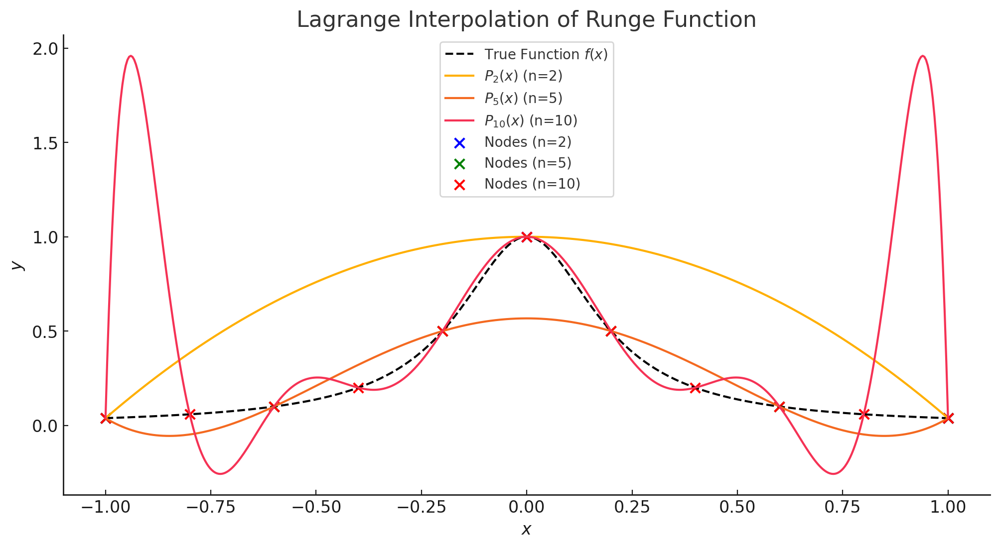

우리 주변에는 데이터를 이용해 미지의 값을 추정하거나, 연속적인 값을 예측해야 하는 상황이 많습니다. 이렇게 주어진 데이터 점들 사이의 값을 추정하는 과정을 수학에서는 **보간(interpolation)**이라고 합니다.
이는 점들을 모두 통과하는 하나의 방정식을 찾아낼 수 있는가? 하는 문제로 연결됩니다. 왜냐하면 이 다항식은 주어진 점들을 모두 정확히 통과하면서, 중간 값들을 추정할 수 있게 해주기 때문이지요. 라그랑주 보간법의 원리를 통해 ‘몇 개의 점으로 방정식을 찾을 수 있을까?‘라는 질문에 답을 찾아보겠습니다.
라그랑주 다항식
무한 체 에서 서로 다른 스칼라 가 주어졌다고 가정해보겠습니다. 이때, 다음과 같이 정의된 다항식 을 **라그랑주 다항식(Lagrange polynomials)이라 부릅니다. 각 가 차수가 인 다항식이며, 따라서 에 속합니다.
이때, 는 다항식 함수 이며,
입니다.
라그랑주 다항식은 의 기저인가?
라 할 때, 다음 함수를 영함수라 가정해보겠습니다.
이 때, 라 하면
이다. 한편 의 성질에 의해,
이므로, 이고, 에 대해 는 선형 독립입니다. 의 차원이 이므로, 는 의 기저(basis)가 됩니다.
가 의 기저이기 때문에, 의 모든 다항식 함수 는 의 다항식 함수들의 선형 결합으로 표현될 수 있습니다.
따라서
이므로
입니다. 이 표현은 를 의 원소들의 선형 결합으로 나타내는 유일한 표현입니다. 이 표현을 **라그랑주 보간 공식(Lagrange interpolation formula)**이라고 부릅니다. 기저의 성질에 의해 에서 를 만족하는 유일한 다항식은 입니다.
세 점을 지나는 이차 다항식 찾기
예를 들어, 을 지나는 이차 다항식을 찾아보겟습니다. 앞서 보았듯 라그랑주 보간 공식은 개의 점 을 지나는 다항식을 다음과 같이 정의하며,
여기서 는 다음과 같이 정의됩니다.
주어진 점은 다음과 같으므로,
- ,
- ,
- .
이며, 는 최대 이차 다항식입니다. 앞선 식을 이용해 을 계산해보겠습니다.
라그랑주 보간 공식을 사용하여 를 계산하면,
세 점이 한 직선 위에 있다면?
만약 세 점이 과 같이 한 직선 위에 있다면 어떻게 될까요? 앞선 방법과 같이 주어진 점을 이용해 을 계산해보겠습니다.
- ,
- ,
- .
이므로 는 최대 이차 다항식입니다.
이제 라그랑주 보간 공식을 사용하여 를 구하면,
이므로,
결과적으로 가 됩니다. 주어진 세 점이 모두 라는 직선 위에 있으므로, 보간 결과도 자연스럽게 가 됩니다. 라그랑주 보간법을 이용하면 세 점이 한 직선 위에 있는지 여부를 미리 확인하지 않아도, 정확한 직선을 반환합니다. 불필요한 고차 항을 제거하는 수학적 원리 덕분에 계산이 간결해지고, 결과적으로 효율적이고 효과적으로 다항식을 찾아내는 것이 가능합니다.
룽게 현상(Runge’s phenomenon)
보간법(Interpolation)은 주어진 데이터 점을 정확히 지나는 다항식을 구성하여 함수 값을 추정하는 방법입니다. 하지만 보간 과정에서 점의 배치 방식에 따라 예기치 않은 문제점이 발생할 수 있습니다. 특히, 등간격 분할(equidistant nodes)을 사용할 경우, 점의 개수가 증가할수록 오히려 보간 정확도가 떨어지는 현상이 발생하는데, 이를 룽게 현상(Runge’s Phenomenon)이라고 합니다.
Runge의 함수
룽게 현상을 관찰하기 위해 다음과 같은 함수를 보겠습니다.
이 함수는 구간 에서 매끄럽지만, 등간격으로 분할한 후 보간하면 경계 근처에서 심한 진동(oscillation)이 발생합다.
 (저차수 보간)
- 비교적 원래 함수와 잘 맞으며, 진동이 거의 없다.
(중간차수 보간)
- 일부 구간에서 진동이 발생하기 시작한다.
- 경계에서 오차가 증가하는 경향이 보인다.
(고차수 보간)
- 경계에서 극심한 진동이 발생하며, 원래 함수의 형태와 완전히 다른 양상을 보인다.
위의 예시를 통해 고차 다항식 보간이 항상 정확한 근사를 제공하지는 않는다는 사실을 확인할 수 있습니다. 따라서, 고차 보간을 사용할 때는 등간격 대신 체비셰프 노드(Chebyshev nodes)와 같은 방법을 사용하면 경계에서의 오차를 줄이고, 룽게 현상을 완화하는 효과가 있습니다.